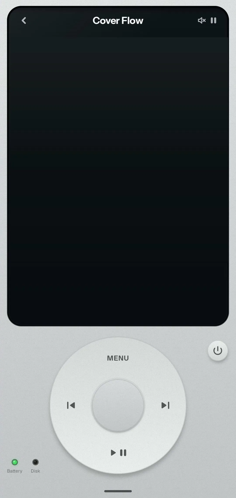
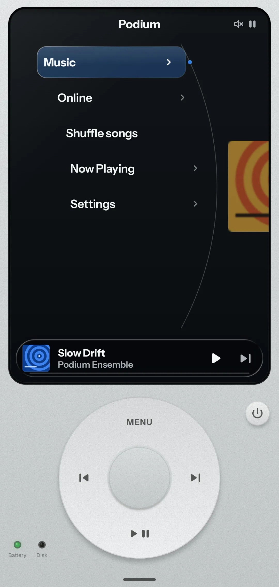
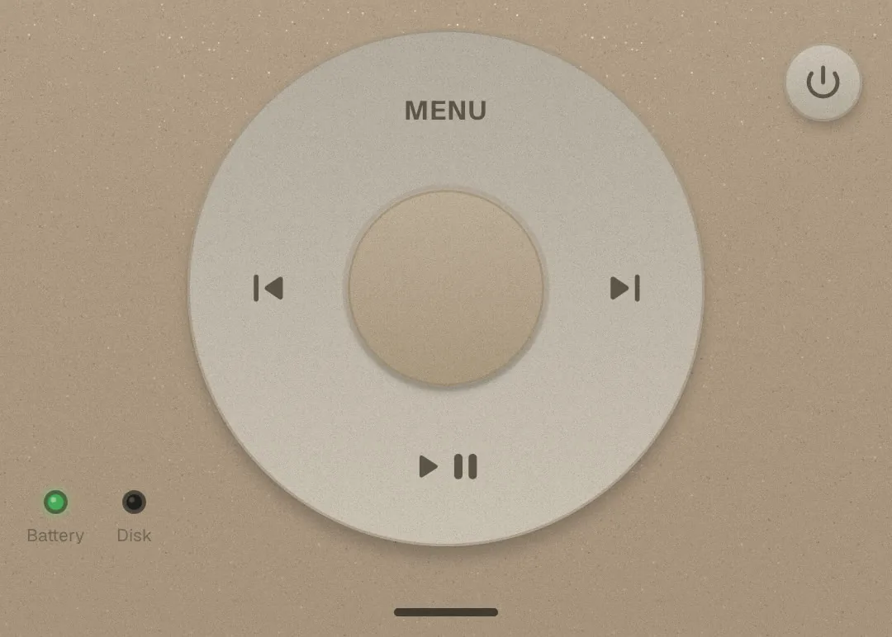
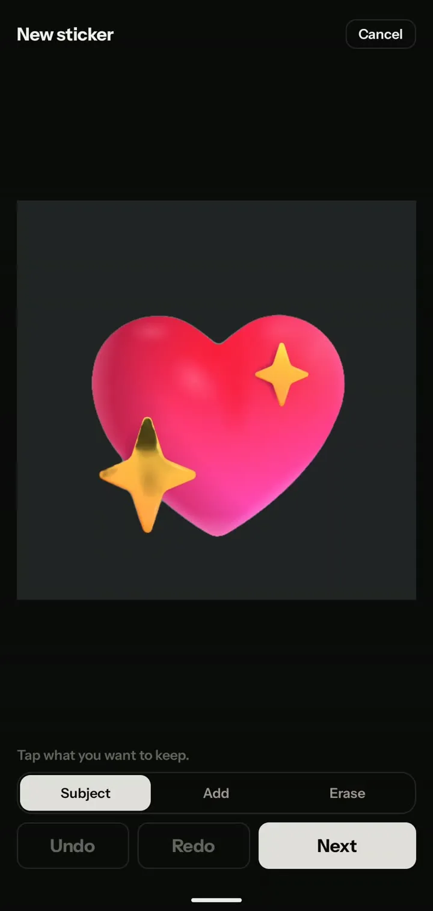
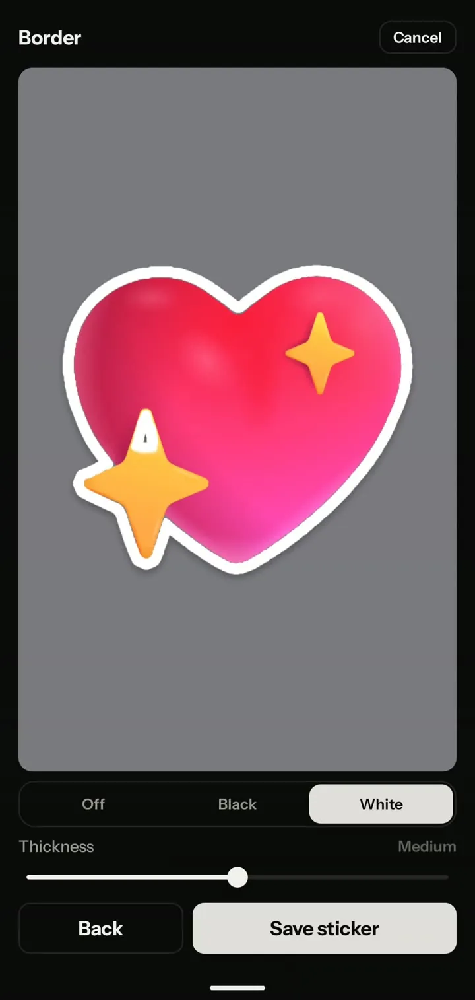
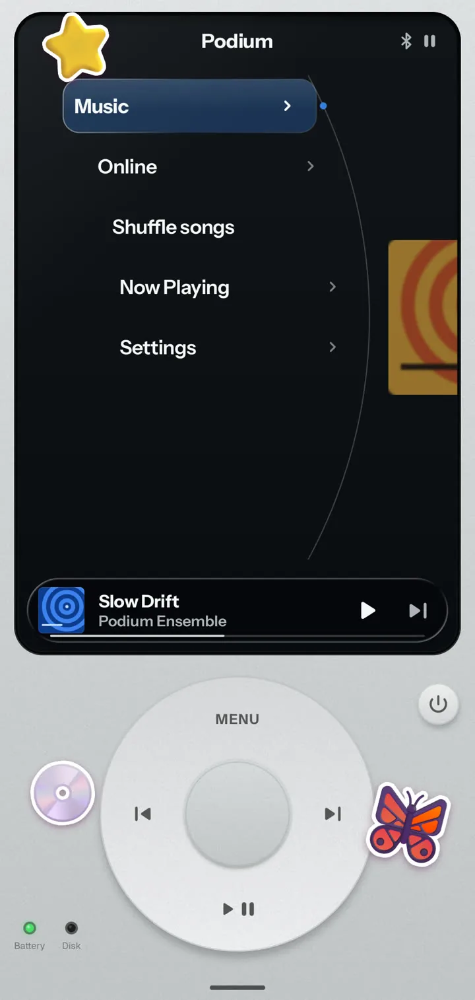
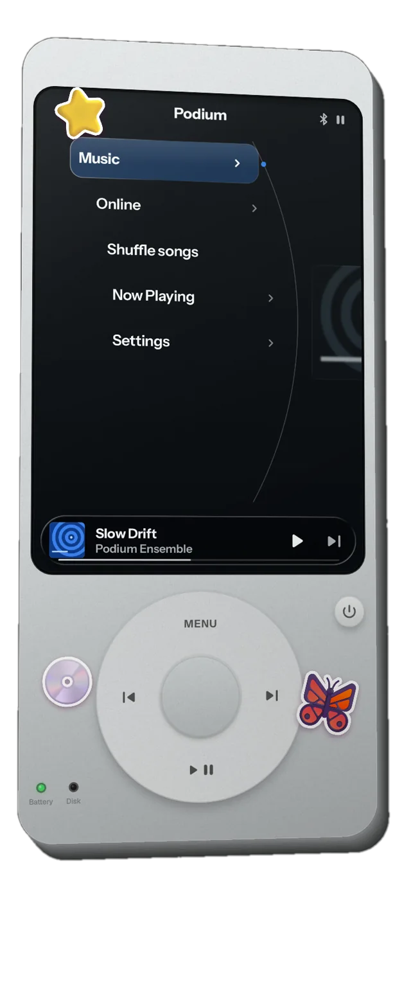
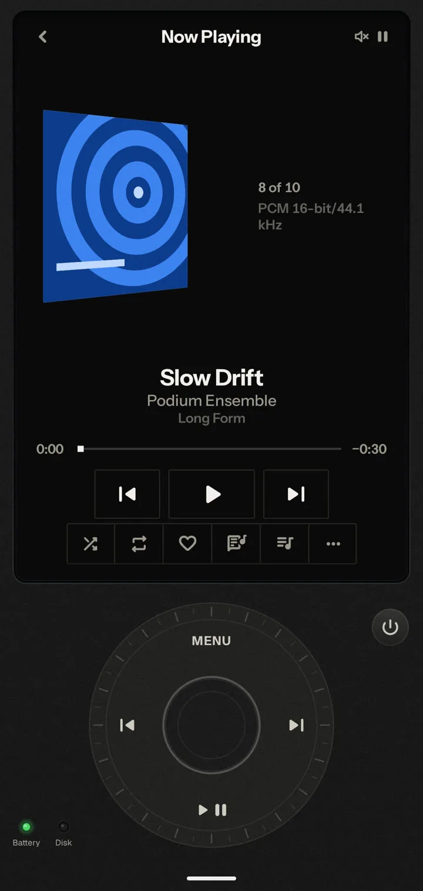
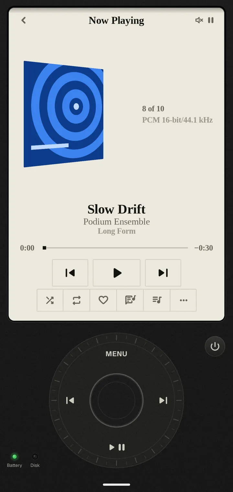

Navigation
One wheel.
Turn to move. Press to choose. Every song, album and setting is a turn away, and every turn clicks under your thumb.
Introducing

Every music app looks the same.
So we brought back the wheel.
Podium is a music player for Android that lives inside one beautifully engineered device. One wheel to move, one button to choose, and everything about it yours to change.
A closer look

Finishes
Silver, Steel gray, Burgundy, Glacier blue, or any colour you dial in with the wheel. Carbon and Bone turn the whole Podium matte.
Navigation
Turn to move. Press to choose. Every song, album and setting is a turn away, and every turn clicks under your thumb.
Cover Flow
Spin through every cover, the centre one facing you and its neighbours standing to either side like a record rack.
Lyrics
Time-synced and revealed word by word, full screen, in the typeface you choose. Seven faces exist only for lyrics, from Calligraphy to Fraktur.
17
From Classic to Gothic, the whole display follows the one you pick. Turn the wheel in the picker and watch every screen restyle as you go.
16.7M
Turn the wheel through hue, saturation and brightness, and the body changes live in your hand. Ink on the display always picks the colour you can read.

Glitter
Fine flakes set into the body catch a soft light as you tilt your phone. Move your cursor across it.Drag a finger across it.
Stickers
Pick a picture, tap what to keep, give it a border, then stick it anywhere on your Podium, even over the screen. The cut-out happens on your phone.



Step outside
Pinch your Podium and it lifts out of the screen into a quiet, starry space, stickers and all. Your sticker gallery waits beside it.

4
Glass, Carbon, Bone and Custom. Put your own picture behind it all, and the text stays readable on top.


PODIUM
Your own library, sorted by album and artist.
Search and stream a full catalogue. No ads.
Every album, in perspective.
Word by word, in seven extra faces.
The whole display, restyled.
Every turn, felt.
The music keeps going when you leave.
Your photos never leave your phone.
Flakes that follow the tilt of your phone.
Battery by charge, disk with every folder.
A self-test and a startup chord, every time.
No trackers, no crash reporters, no ads.
Hold your music again.
Free and open source. Needs Android 10 or later. Open the downloaded APK to install, or see all releases.